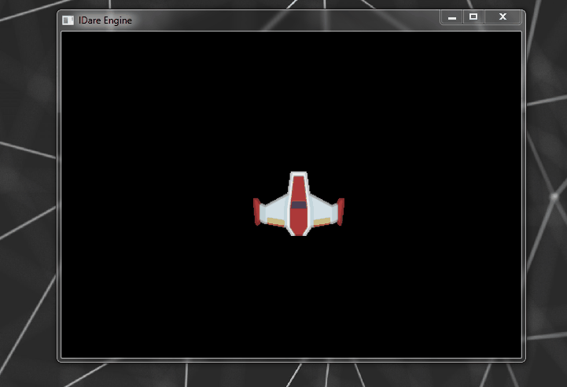
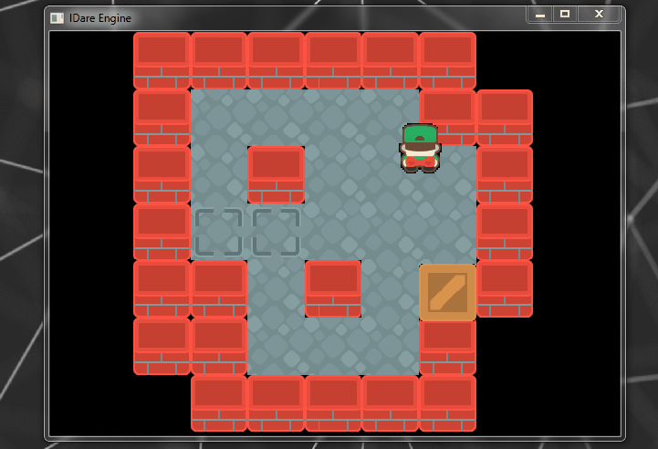

Em jogos 2D onde usualmente se emprega uma projeção ortográfica, o tamanho e proporção dos elementos da cena está intimamente ligado ao aspect ratio. Aspect ratio é a razão entre a largura e altura da resolução em que se está renderizando. Não considerar esta razão pode resultar em deformações na imagem, o que raramente é o que se deseja na maioria dos jogos.
Existem, entretanto, situações onde não é possível garantir que o viewport tenha um aspect ratio correto. Seja por que a janela foi redimensionada ou simplesmente por que a resolução que queremos não é suportada.
Na minha engine considerei algumas alternativas para garantir que os jogos fossem sempre renderizados corretamente. Cada uma delas com seus prós e contras.
Alguns jogos interceptam o redimensionamento da janela, e impedem que ela seja alterada para uma resolução que desrespeite o aspect ratio, fazendo com que a janela incremente automaticamente a largura ou altura enquanto é redimensionada.
Prós:
Certeza do viewport com aspect ratio correto.
Contras:
Isso acaba restringindo algumas funcionalidades do SO como snapping de janelas.
Seria difícil garantir isso em dispositivos móveis. Sem falar que depois do Nougat o splitscreen tornou essa abordagem ainda menos viável.
Prós:
Certeza do viewport com aspect ratio correto.
É possível escrever o jogo para uma única resolução
Contras:
Essa opção me pareceu invasiva e não garante que o computador/monitor suporte a resolução ou mesmo o aspect ratio que precisamos.
Se não for possível alterar a resolução (talvez por não ser suportada) o jogo não roda ou roda deformado.
O jogo fica responsável por restaurar a resolução quando for fechado. E o jogo travar ou quebrar ?
Novamente, longe do ideal para jogos mobile.
Esta foi a opção que decidi implementar, e consiste calcular um viewport com aspecto correto com base no espaço disponível.
Prós:
Certeza do viewport com aspect ratio correto.
É possível escrever o jogo para uma única resolução (com alguma engenhosidade)
Funciona com mobile.
As barras só aparecem apenas quando não temos janela/tela com proporções corretas.
Contras:
Eu sei, barras verticais ou horizontais não são necessariamente a coisa mais bonita de ser ver ao redor do seu jogo.
O viewport é calculado sempre que as dimensões da tela mudam, seja redimensionando a janela no PC ou rotacionando o celular.
void setViewportAspectRatio(uint32 windowWidth, uint32 windowHeight, uint32 virtualWidth, uint32 virtualHeight)
{
float targetAspectRatio = virtualWidth / (float) virtualHeight;
// Try fitting viewport on window width
int32 viewportWidth = windowWidth;
int32 viewportHeight = (int)(viewportWidth / targetAspectRatio + 0.5f);
// if height is bigger than width, fit viewport in window height then
if (viewportHeight > windowHeight)
{
viewportHeight = windowHeight;
viewportWidth = (int)(viewportHeight* targetAspectRatio + 0.5f);
}
// center viewport
int32 viewportX = (windowWidth / 2) - (viewportWidth / 2);
int32 viewportY = (windowHeight / 2) - (viewportHeight / 2);
setViewport(viewportX, viewportY, viewportWidth, viewportHeight);
globalShaderData.baseModelMatrix = Mat4();
globalShaderData.baseModelMatrix.scale(
viewportWidth / (float)virtualWidth,
viewportHeight / (float)virtualHeight, 1.0f);
}
void setViewport(uint32 x, uint32 y, uint32 width, uint32 height)
{
globalShaderData.projectionMatrix.orthographic(0, width, 0, height, -1, 1);
glViewport(x, y, width, height);
}Das linhas #3 até #14 a função tenta encaixar um viewport com ratio correto no tamanho atual da tela. Isso é feito utilizando totalmente a menor dimensão – seja altura ou largura – e calculando proporcionalmente a segunda dimensão. Estes valores são guardados em viewportWidth e viewportHeight e logo enviados para função setViewport que calcula a matriz de projeção paro novo viewport e armazena numa estrutura que é visível para todos os shaders da engine.
Perceba que os parâmetros virtualWidth e virtualHeight, representam a resolução virtual do jogo. Por resolução virtual, quero dizer que o jogo poderá ser escrito para uma resolução específica sem se preocupar com o tamanho do viewport. Isso é possível por que nas linhas #22, #23 e #24 é construída a matriz baseModelMatrix, que escala os eixos X e Y com base na proporção entre o tamanho do viewport e a resolução ‘virtual’ do jogo.
Esta matriz também é parte da estrutura visível a todos os shaders da engine. Deste modo, os shaders que desenham sprites precisam apenas multiplicar os vértices dos sprites pelas matrizes de projeção ProjectionMatrix e baseModelMarix pra garantir tamanho e aspecto corretos. Por exemplo:
// engine structures automatically included by the engine
out vec4 fragColor;
out vec2 texCoord;
void main()
{
fragColor = vec4(vColor, 0.0);
gl_Position = ldare.projectionMatrix * ldare.baseModelMatrix * vec4(vPos.xy, 1.0, 1.0);
texCoord = vTexCoord;
}O que particularmente me agrada nesta solução, além da simplicidade, é o fato de permitir assumir uma resolução fixa para o jogo independente do tamanho do viewport. Isso torna a coisas mais simples ao implementar jogos 2D. Principalmente tile based games que assumem tiles simétricos como na imagem acima.